F N A F
3D
Clique para ativar a tela cheia
fullscreenPara uma melhor experiência, vire o seu celular.
Aqui você pode ver as animações disponíveis do modelo
(Clique)
Tem certeza? Você perderá as noitas salvas de todos os jogos, os modelos desbloqueados e as moedas 3D.
Parabéns! Por ter desbloqueados todos os extras disponíveis, aqui está um presente! Jogue e instale o Five Nights at Freddy's Ultimate Custom Night original de forma gratuita e totalmente livre de vírus e malware. Este jogo foi postado diretamente no site Game Jolt pelo próprio Scott Cawthon.
Five Nights at Freddy's Ultimate Custom Night é um título que leva os jogadores a um ambiente de tensão e estratégia, onde cada decisão pode ser a diferença entre a sobrevivência e um encontro fatal com os habitantes mecânicos do jogo. Este capítulo da série FNaF é uma verdadeira prova de resistência mental e agilidade, desafiando os jogadores a se adaptarem rapidamente a uma variedade de ameaças em constante mudança.
O jogo é aclamado por sua atmosfera imersiva e sombria, que é intensificada pela trilha sonora e pelos efeitos sonoros que mantêm os jogadores em alerta máximo. A tensão é palpável a cada clique do mouse e a cada olhar para as câmeras de segurança, enquanto os jogadores tentam antecipar os movimentos dos animatrônicos.
Além disso, Ultimate Custom Night oferece uma experiência narrativa mais profunda, com easter eggs e pistas escondidas que revelam mais sobre o misterioso lore da série. Os fãs dedicados podem passar horas decifrando as mensagens ocultas e teorizando sobre as verdadeiras motivações por trás dos eventos perturbadores do jogo.
Bem-vindo ao mashup definitivo de FNaF, em que mais uma vez você ficará preso sozinho em um escritório, defendendo-se de animatrônicos assassinos! Com 50 personagens animatrônicos selecionáveis abrangendo sete jogos de Five Nights at Freddy's, as opções de personalização são quase infinitas. Misture e combine qualquer variedade de personagens de sua preferência, defina o nível de dificuldade de 0 a 20 e passe direto para a ação! Da mesa de seu escritório, você deve controlar duas portas laterais, dois respiradouros e duas mangueiras de ar, todos levando diretamente ao seu escritório.
Desta vez, também é preciso dominar outras ferramentas se você quiser ultrapassar os desafios decisivos, ferramentas como aquecedor, ar-condicionado, caixa de música global, gerador de energia e muito mais. Como se tudo isso não bastasse, você também precisará colocar armadilhas de laser nos respiradouros, coletar Faz-Coins, comprar itens no Balcão de Prêmios e, como sempre, ficar de olho não em uma, mas duas cortinas na Enseada do Pirata!
Outros recursos também incluídos:
- Menu de desafios incluindo 16 desafios temáticos
- Retorno de dubladores favoritos, além de novos integrantes da franquia
- Skins de escritório desbloqueáveis
- Cutscenes desbloqueáveis
Disponível apenas para computador.
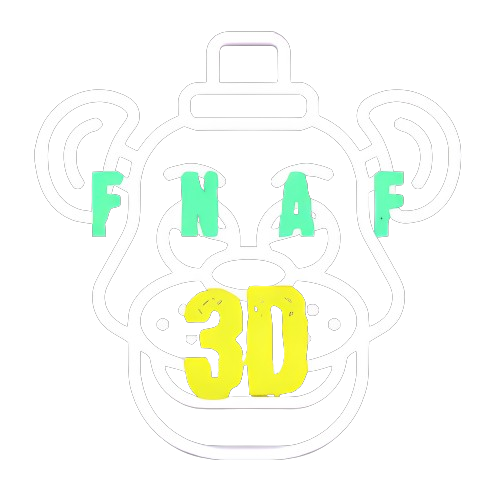
F N A F
3D
Logo oficial de Fnaf 3D. Possui o formato da cabeça de Freddy branca, sobre ele escrito FNAF em verde e 3D amarelo.
north east south west Pressionar setinhas do teclado
mouse Arrastar o botão esquerdo do mouse
touch_app Arrastar o dedo
mouse Com o scroll do mouse (rodinha)
pinch_zoom_out Com o movimento depinça (dois dedos)
Velocidade:
0% 100%Cor:
Intensidade:
0% 100%Suavização:
0% 100%Five Nights at Freddy's (FNaF) é uma franquia de mídia criada por Scott Cawthon. O primeiro jogo foi lançado em 8 de agosto de 2014 e se tornou um sucesso mundial. A história se passa na Pizzaria Freddy Fazbear, onde o jogador assume o papel de um vigia noturno chamado Mike Schmidt. Após desaparecimentos misteriosos e homicídios de crianças, a pizzaria é reaberta, e Mike deve sobreviver a cinco noites seguidas enquanto enfrenta animatrônicos possuídos. O objetivo é evitar ser pego e morto pelos animatrônicos durante o turno noturno.
Bem-vindo ao seu novo trabalho na temporada de verão no Freddy Fazbear's Pizza, onde adultos e crianças encontram comida e diversão sem fim! A atração principal é Freddy Fazbear, claro; e seus dois amigos. Eles são robôs animados programados para agradar o público! Entretanto, o comportamento dos robôs durante a noite se tornou de certo modo imprevisível e sairia muito mais barato contratar você como segurança do que consertá-los.
Do seu pequeno escritório você deve monitorar as câmeras de segurança com muita atenção. Você tem uma quantidade muito limitada de eletricidade que poderá ser usada a cada noite (cortes nos gastos corporativos, você sabe né). Isso que significa que se você ficar sem eletricidade para aquela noite - nada de portas de segurança nem luzes! Se alguma coisa estiver errada - por exemplo se Freddy ou seus amigos não estiverem nos seus lugares, você deve encontrá-los pelos monitores e se proteger, caso necessário!
Você sobreviveria por cinco noites na Pizzaria Freddy Fazbear?
Five Nights at Freddy's 2 (FNaF 2) é a sequência da franquia de mídia criada por Scott Cawthon. O jogo foi lançado em 11 de novembro de 2014 e rapidamente ganhou popularidade. A história se passa na "nova e improvisada" Pizzaria Freddy Fazbear, onde o jogador assume o papel de um novo guarda de segurança chamado Jeremy Fitzgerald. Após os eventos misteriosos do primeiro jogo, a pizzaria é reaberta com novos animatrônicos, que são amigáveis com as crianças durante o dia, mas à noite, eles andam livremente pelos corredores da pizzaria. Jeremy deve sobreviver a cinco noites seguidas enquanto enfrenta esses animatrônicos.
Existem seis novos animatrônicos, além das versões degradadas dos cinco originais do primeiro jogo, totalizando onze antagonistas. A mecânica de sobrevivência do jogo difere do primeiro, com a remoção de portas e a adição da Máscara de Freddy Fazbear e da Lanterna. O objetivo de Jeremy é monitorar as câmeras e garantir que nada dê errado depois da hora do fechamento. Se os animatrônicos entrarem acidentalmente em seu escritório, Jeremy deve usar a cabeça do Freddy Fazbear vazia para enganá-los e evitar ser pego e morto.
Bem-vindo de volta à nova e otimizada Freddy Fazbear's Pizza!
No Five Nights at Freddy's 2, os animatrônicos velhos e obsoletos recebem um novo elenco de personagens. Eles são amigos das crianças, foram atualizados com a tecnologia de reconhecimento facial mais recente, estão vinculados às bases de dados locais de criminosos e prometem fazer um show seguro e divertido para crianças e adultos!
O que poderia dar errado?
Como novo segurança noturno, seu trabalho é monitorar as câmeras e se certificar que nada dê errado após o expediente. O segurança anterior reclamou que os personagens estavam tentando entrar no escritório (desde então, ele mudou para o turno diurno). Para deixar seu trabalho mais fácil, deixamos uma cabeça de Freddy Fazbear vazia para você, assim, caso entrem no escritório por acidente, os animatrônicos podem não te reconhecer e te deixarão em paz.
Como sempre, a Fazbear Entertainment não se responsabiliza em caso de morte ou desmembramento.
Five Nights at Freddy's 3 (FNaF 3) é a terceira entrada na franquia de mídia criada por Scott Cawthon. O jogo foi lançado em 2 de março de 2015. O jogador assume o papel de um guarda de segurança em uma atração de terror que faz referência aos acontecimentos ocorridos na pizzaria. O objetivo é sobreviver a cinco noites enquanto enfrenta um único animatrônico real, Springtrap, além de vários "animatrônicos fantasmas" que não podem prejudicar o jogador diretamente, mas podem obstruir seus esforços para evitar Springtrap.
Trinta anos após a Freddy Fazbear's Pizza fechar as portas, os eventos que aconteceram lá se tornaram nada mais que rumores e memórias de infância, mas os donos da "Fazbear's Fright: A Atração de Horror" estão determinados a ressuscitar a lenda e tornar a experiência mais autêntica o possível para os clientes, indo às últimas consequências para encontrar qualquer coisa que tenha sobrevivido a décadas de descuido e decadência.
No começo havia apenas cascos vazios, uma mão, um gancho, uma velha boneca de prato de papel, até que uma descoberta incrível foi feita...
A atração agora tem um animatrônico.
Five Nights at Freddy's 4 (FNaF 4) é a quarta entrada na franquia de mídia criada por Scott Cawthon. O jogo foi lançado em 23 de julho de 2015. A história se passa em uma casa, onde o jogador assume o papel de uma criança assustada. Diferente dos jogos anteriores, que se passavam em pizzarias, o cenário de FNaF 4 é o quarto de um garotinho. Durante o dia, ele brinca com seus brinquedos e à noite, pesadelos terríveis começam.
O jogador deve sobreviver a cinco noites enquanto enfrenta versões pesadelo dos animatrônicos originais. O objetivo é sobreviver das 12:00 horas da noite até às 06:00 horas da manhã. O jogador deve verificar as portas, o armário e a cama, usando a lanterna para ver se algum animatrônico está se aproximando. Se um animatrônico estiver muito próximo, o jogador deve fechar a porta até que o perigo passe. O som é um elemento crucial neste jogo, pois os ruídos sutis podem indicar a aproximação dos animatrônicos. Five Nights at Freddy's 4 introduziu uma nova mecânica de jogo, onde o jogador deve ouvir atentamente para sobreviver, tornando a experiência ainda mais aterrorizante.
No capítulo mais recente da história original de Five Nights at Freddy's, você deve mais uma vez se defender de Freddy Fazbear, Chica, Bonnie, Foxy e de outras coisas bem piores que espreitam na escuridão. Jogando como uma criança cujo o papel ainda é desconhecido, você deve se proteger até às 6 da manhã observando as portas, assim como evitando criaturas indesejadas que possam aparecer no seu armário ou na cama, atrás de você.
Você só tem uma lanterna com a qual se proteger. Ela é capaz de espantar coisas que possam estar se arrastando na outra ponta dos corredores, mas tome cuidado, e escute. Caso algo tenha se aproximado demais, apontar a sua lanterna para os olhos desta coisa decretará o seu fim.
Five Nights at Freddy's: Sister Location (FNaF SL) é a quinta entrada na franquia de mídia criada por Scott Cawthon. O jogo foi lançado em 7 de outubro de 2016. A história se passa na "Circus Baby Pizza World", onde o jogador assume o papel de um técnico noturno. Após os eventos dos jogos anteriores, a Circus Baby Pizza World é inaugurada com novos animatrônicos, que são amigáveis com as crianças durante o dia, mas à noite, eles se movem livremente pelos corredores da pizzaria.
O jogo se distingue das mecânicas e narrativas dos jogos anteriores da série, oferecendo ao jogador acesso a qualquer área do jogo, cada uma com seu próprio objetivo que o jogador deve realizar. Ao longo do jogo, o jogador interage com um novo elenco de personagens animatrônicos, agora liderados pela novata Circus Baby. O objetivo do jogador é passar de sala em sala, a fim de cumprir uma série de objetivos que mudam durante cada uma das cinco noites. Por exemplo, a segunda noite exige que o jogador passe por um auditório escuro e reinicie um grupo de disjuntores, enquanto que para a quarta noite, o jogador é colocado dentro de um traje e deve manter suas molas fechadas enquanto sacode as Minireenas que escalam sobre o jogador.
Bem-vindos ao Pizza World da Circus Baby, onde a diversão e a interatividade em família vão além de tudo o que você já viu naquelas *outras* pizzarias! Com animadores animatrônicos de última geração que vão deixar suas crianças de cabelo em pé, além de um buffet personalizado de pizzas, nenhuma festa está completa sem a Circus Baby e sua trupe!
Contratando: Técnico/a para a madrugada. Precisa gostar de espaços apertados e se sentir confortável ao redor de maquinário em funcionamento. Não assumimos responsabilidade por morte ou desmembramento.
Five Nights at Freddy's: Pizzeria Simulator (FNaF FFPS) é a sexta entrada na franquia de mídia criada por Scott Cawthon. O jogo foi lançado em 4 de dezembro de 2017. A história se passa em uma pizzaria, onde o jogador assume o papel de um gerente. Após os eventos dos jogos anteriores, o jogador agora é o proprietário de uma pizzaria. Durante o dia, o jogador deve cuidar dos pedidos dos clientes, gerenciar os estoques e garantir que tudo funcione sem problemas. No entanto, à noite, as coisas ficam aterrorizantes.
O jogo combina a simulação de uma pizzaria com um jogo de sobrevivência de horror. O jogador deve se sentar em um escritório até o horário de fechamento para se defender dos animatrônicos recuperados que se escondem dentro enquanto terminam suas tarefas. Se o jogador não conseguir manter a pizzaria segura, pode ser processado e possivelmente correr o risco de falência se for processado muitas vezes. O verdadeiro jogo começa depois que o jogador termina de montar sua pizzaria.
Possível proprietário de um restaurante franqueado Freddy Fazbear's Pizza, nós queremos você!
O que começa como simples diversão de jogar pizza se transforma em algo muito, muito superior. Atravesse o jogo de fliperama todo defeituoso e descubra que você está em sua própria Freddy Fazbear's Pizzeria!
Pesquise nossos catálogos e compre suas primeiras atrações e animatrônicos, personalize suas decorações e, acima de tudo, certifique-se de que todo o equipamento esteja funcionando corretamente antes de abrir as portas da sua novíssima Freddy Fazbear's Pizzeria!
Depois de um dia atarefado, encerre a papelada e feche sua empresa (muitas vezes até tarde da noite enquanto constrói sua própria empresa!). Tenha cuidado, contudo, com o que possa estar escondido nos respiradouros. Se alguma coisa chamar sua atenção, aponte a lanterna direto para o respiradouro para repelir o que for. A Fazbear Entertainment fornece pilhas gratuitamente a todos os seus franqueados!
No dia seguinte, supondo que você tenha sobrevivido à noite, reinvista sua receita de ontem em novos equipamentos. Desenvolva sua pequena pizzaria, dia após dia, para vê-la se tornar um império de alimentação e entretenimento! A Fazbear Entertainment fornece aos seus franqueados todas as ferramentas e conhecimentos necessários para criar e gerenciar um local acolhedor, seguro e lucrativo.
Ah, e se você quiser e puder, tente salvar alguns dos animatrônicos que vagam do lado de fora do seu restaurante. Eles já estão tentando entrar há meses, é melhor não perder a oportunidade de pegar peças de reposição e arrecadar alguma receita adicional. Se detectar qualquer instabilidade ou agressividade em algum deles, utilize o taser de autodefesa que a Fazbear Entertainment disponibiliza gratuitamente a todos os seus franqueados.
Isso conclui a assistência que a lei nos obriga a fornecer. A Fazbear Entertainment não pode ser responsabilizada por desaparecimentos, mortes ou mutilações que possam ocorrer como resultado da operação da franquia Freddy Fazbear's Pizza.
Não espere mais, comece hoje mesmo!
Five Nights at Freddy's: Security Breach” é a mais recente adição à popular série de jogos de terror Five Nights at Freddy's, criada por Scott Cawthon. Este novo jogo leva a franquia a um novo patamar, introduzindo um ambiente expansivo e uma jogabilidade mais imersiva.
Neste jogo, você se encontra no Mega Pizzaplex de Freddy Fazbear, um complexo de entretenimento de três andares durante a noite. Como Gregory, você deve navegar pelos corredores escuros e salas temáticas do Pizzaplex, enquanto tenta evitar os animatrônicos que ganharam vida. Os animatrônicos, que antes eram atrações divertidas durante o dia, se tornam predadores à noite. Cada um deles tem suas próprias habilidades e táticas de caça, tornando cada encontro único e aterrorizante. Além disso, novos personagens foram introduzidos, adicionando uma nova camada de suspense e terror ao jogo.
A sobrevivência não depende apenas de se esconder ou fugir dos animatrônicos. Você também deve usar as ferramentas e recursos disponíveis no ambiente para distrair ou desviar os animatrônicos. Cada decisão que você toma pode ser a diferença entre a sobrevivência e ser pego. Além da intensa jogabilidade de sobrevivência, "Five Nights at Freddy's: Security Breach" também oferece uma rica história para descobrir. À medida que você explora o Mega Pizzaplex, você descobrirá segredos obscuros e aprenderá mais sobre os eventos misteriosos que ocorreram ali.
Five Nights at Freddy's: Security Breach é o mais novo jogo da série de terror para toda a família amada por milhões de jogadores de todo o mundo. Jogue como Gregory, um garotinho preso durante a noite no Freddy Fazbear's Mega Pizzaplex. Com a ajuda do próprio Freddy Fazbear, Gregory deve sobreviver aos personagens reimaginados de Five Nights at Freddy's que estão atrás dele — além de novas ameaças horripilantes.
OS CAÇADORES E O CAÇADO — Quando os protocolos noturnos são ativados, os animatrônicos do Fazbear's Mega Pizzaplex perseguem todos os intrusos implacavelmente. Glamrock Chica, Roxanne Wolf, Montgomery Gator e Vanessa, a guarda noturna do Pizzaplex, vão revirar todos os carrinhos de pizza de algodão-doce se for preciso — é melhor não ficar muito tempo no mesmo lugar.
ADAPTE-SE PARA SOBREVIVER - Acesse as câmeras de segurança do prédio para examinar o ambiente e planejar sua rota para evitar o perigo. Distraia inimigos derrubando latas de tinta e brinquedos — mas escape antes que os inimigos sejam atraídos para a sua posição. Esconda-se até o perigo passar ou tente correr mais que os caçadores. Jogue do seu jeito, mas esteja pronto para adaptar-se.
EXPLORE E DESCUBRA — O Freddy Fazbear's Mega Pizzaplex oferece uma variedade de atrações para os convidados: Monty Golf, Roxy Raceway, Bonnie Bowl, os esgotos e.... esgotos? O Pizzaplex é vasto e cheio de coisas para descobrir.
Five Nights at Freddy's: Security Breach é um marco na série de jogos de terror de sobrevivência criada por Scott Cawthon. O jogo, que se passa no Mega Pizzaplex de Freddy Fazbear, apresenta uma nova dimensão de medo e suspense. Agora, o palco está pronto para a DLC "Ruin". Nesta expansão gratuita, o Mega Pizzaplex, outrora vibrante e cheio de vida, agora é um lugar sombrio e abandonado. As luzes se apagaram, os animatrônicos estão desligados e o riso das crianças é apenas uma memória distante.
A DLC "Ruin" oferece uma nova perspectiva sobre o universo de Five Nights at Freddy's. Ela desafia os jogadores a explorar o Pizzaplex de uma maneira totalmente nova, enquanto tentam desvendar seus segredos e sobreviver aos perigos que espreitam nas sombras.
Você pode correr, mas não se esconder...
Entre nas ruínas do Freddy Fazbear's Mega Pizzaplex no DLC GRÁTIS de Five Nights at Freddy's: Security Breach!
Gregory está preso de novo no agora abandonado Pizzaplex e precisa da sua ajuda! Jogue como Cassie, a melhor amiga de Gregory, uma Faz-fanática e aspirante a salvadora, enquanto ela desbrava a sombria, lúgubre e dilapidada pizzaria. Ela está armada apenas de uma Faz-Ferramenta, um Roxy-Talky e uma estranha máscara de coelho, e você precisa ajudá-la a encontrar seu amigo, libertá-lo e escapar das ruínas em segurança.
Será que você consegue salvar seu amigo, a si mesma e o Pizzaplex? Descubra no DLC 100% grátis Five Nights at Freddy's: Security Breach - Ruin.
Five Nights at Freddy's World é um spin-off da série de survival horror Five Nights at Freddy's desenvolvido por Scott Cawthon. Foi lançado para PC no dia 21/01/2016. Alguns dias depois do lançamento, foi removido do Steam para melhorias no jogo. No dia 08/02/2016, ele foi re-lançado no Game Jolt com uma nova atualização. A versão portátil do jogo foi lançada para Android no dia 12/01/2017, mas um dia depois foi excluída da Google Play. A versão para iOS foi anunciada, mas não foi lançada. Diferente de seus antecessores, ele é um jogo de RPG ao invés de horror.
Com 48 personagens jogáveis, diversos finais, diversas dificuldades e ótimas trilhas sonoras desenvolvidas por Leon Riskin, FNaF World está a toda velocidade e não para. Tome controle de Freddy e sua turma e parta para uma missão no mundo debaixo dos mundos, um mundo que reflete as ações e os atos do "flipside", onde as coisas haviam começado a ficar distorcidas e quebradas. Guie o seu time até as profundezas desse mundo digital para descobrir a origem dessas distorções e monstros, e restaure isso que foi designado para ser um paraíso seguro.
Mas tenha cuidado, atrás das cortinas pode existir algo ainda mais sinistro controlando as marionetes...
Fnaf 3D
MWD
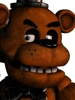
Freddy Fazbear
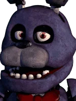
Bonnie
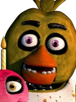
Chica
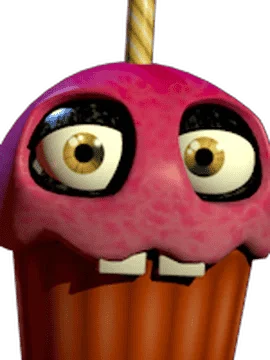
Cupcake
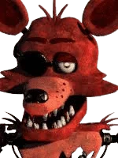
Foxy
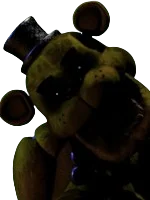
Golden Freddy
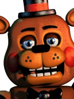
Toy Freddy
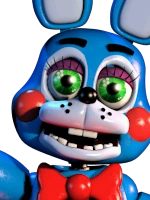
Toy Bonnie
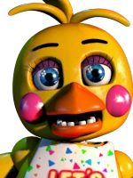
Toy Chica
Toy Cupcake
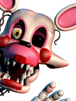
Mangle
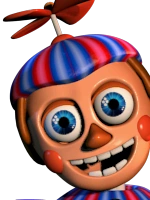
Balloon Boy
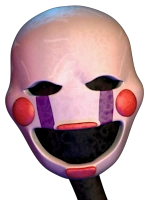
Puppet
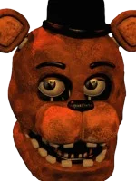
Withered Freddy
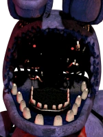
Withered Bonnie
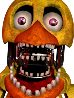
Withered Chica
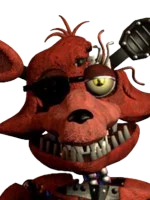
Withered Foxy
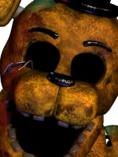
Withered Golden Freddy
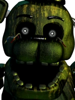
Phantom Freddy
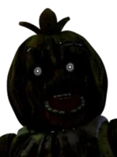
Phantom Chica
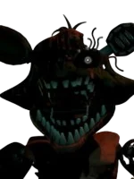
Phantom Foxy
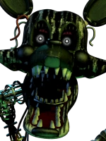
Phantom Mangle
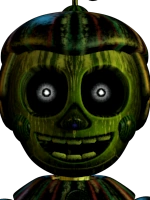
Phantom Balloon Boy
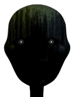
Phantom Puppet
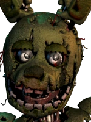
Springtrap (William Afton)
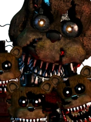
Nightmare Freddy
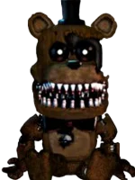
Freddles
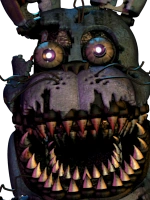
Nightmare Bonnie
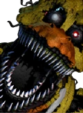
Nightmare Chica
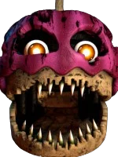
Nightmare Cupcake
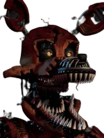
Nightmare Foxy
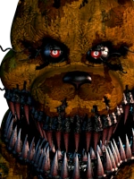
Nightmare Fredbear
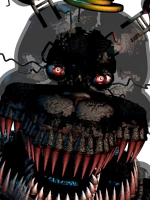
Nightmare
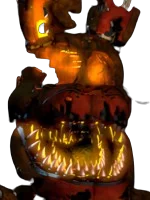
Jack-O-Bonnie
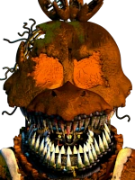
Jack-O-Chica
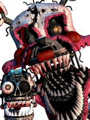
Nightmare Mangle
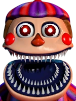
Nightmare Balloon Boy
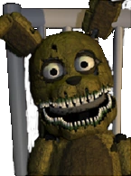
Plushtrap
Nightmarionne
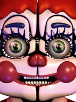
Circus Baby
Funtime Freddy
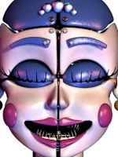
Ballora
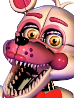
Funtime Foxy
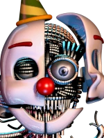
Ennard
Lolbit
Puppet Bonnie
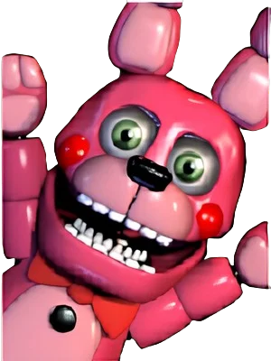
Bonnet
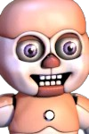
Bidybab
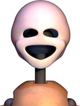
Minireena
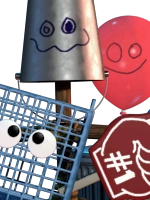
Trash and the Gang
Helpy
Happy Frog
Mr. Hippo
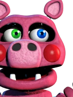
Pigpatch
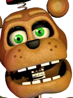
Nedd Bear
Orville Elephant
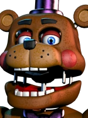
Rockstar Freddy
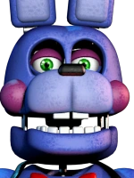
Rockstar Bonnie
Rockstar Chica
Rockstar Foxy
Music Man
El Chip
Funtime Chica
Molten Freddy
Scrap Baby
Scraptrap
Lefty
Moeda 3D
1
Purple Man (William Afton)
10
???
???
???
???
Este modelo 3D não possui animações.
Este modelo 3D não
possui audios.